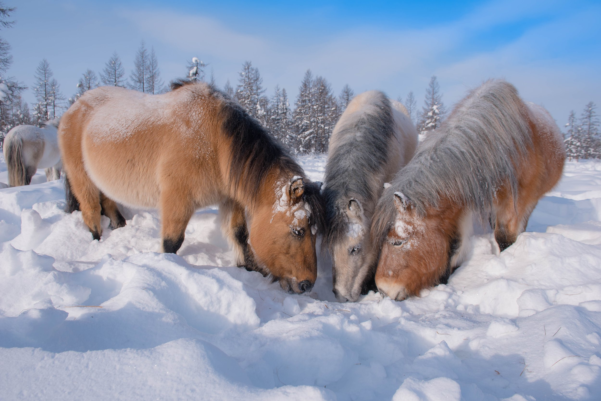
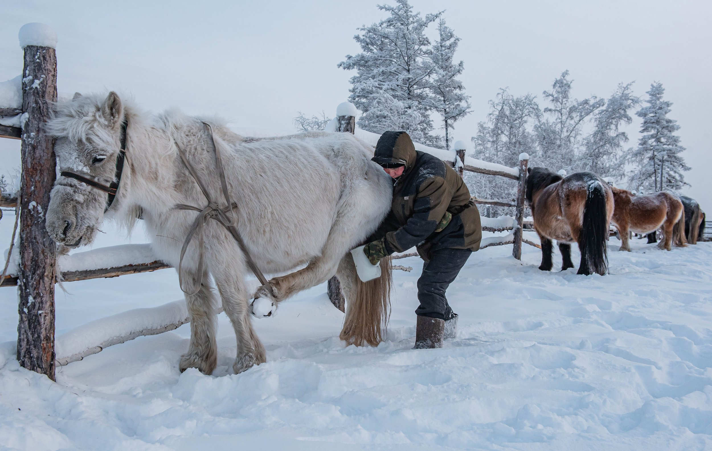
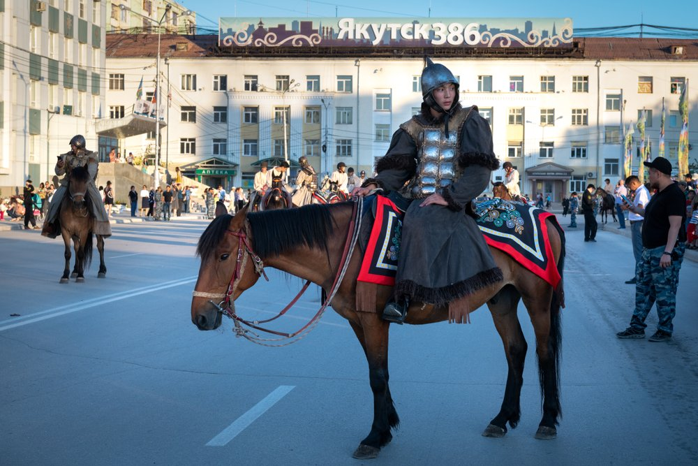

Spirit Horses of Yakutia
Guardians of Ice and Ancestry
In the vast, frozen expanse of Yakutia, where winter locks the ground in ice and temperatures can fall below -60C, a small, shaggy horse endures with astonishing ease. The Yakutian horse, known locally as Sakha ata, is not simply adapted to the cold. It belongs to it.
With frost-coated whiskers and dense winter coats, these horses move like dark shadows across snowfields. In this landscape, the horse-human relationship is not ornamental or recreational. It is practical, ancestral, and deeply spiritual.
For the Sakha people, horses are beings of power. In local cosmology, they are messengers between earthly life and the spirit world, and their presence is marked by ritual. A blessing before travel, smoke from juniper, offerings at a foal's birth: each gesture reflects reverence rather than ownership.

Built for the Arctic
The Yakutian horse is a case study in evolutionary resilience. Descended from ancient equines that adapted over millennia to Arctic conditions, the breed developed a compact frame, reduced extremities, and a low metabolic rate that conserves energy during long winters.
They paw through snow to find frozen grasses and lichen, while coats that can exceed 15 centimetres in length insulate against bitter wind. A seasonal layer of body fat provides an additional reserve of warmth and calories when forage is limited.
Unlike many domestic breeds, Yakutian horses remain semi-wild across taiga and tundra. They are rounded up seasonally, but for much of the year they navigate deep snow, icy crossings, and predator risk with limited human intervention.

Daily Survival, Ritual Respect
Despite modest size, these horses remain central to life in the far north. They pull sleds through snowbound terrain, provide milk used for kumis, and historically supplied meat during long winters when alternatives were scarce.
These uses are framed by acknowledgment, not indifference. In traditional practice, the death of a horse is ritually marked, and each part of the animal is used. Hide, bone, and meat all carry purpose, reflecting a culture where survival and gratitude must coexist.
Tradition Under Pressure
Yakutia's horse culture now faces new pressures. Climate instability alters snowpack and pasture cycles, disrupting patterns that sustained free-ranging herds for generations. At the same time, younger people increasingly leave for Yakutsk and other cities, where older rhythms can feel distant.
Yet revival efforts are growing. Elders, breeders, and researchers are working to preserve the Yakutian horse's genetic integrity and cultural significance. Some seek wider heritage recognition. Others focus on local transmission, ensuring practical knowledge and ritual meaning stay alive together.

To follow Yakutian horse tracks over frozen ground is to enter a worldview where endurance is sacred and relationship is survival: between people and land, belief and breath, rider and horse.
"In Yakutia, the horse is not separate from culture; it is one of the ways culture continues to live."
Related Stories

The Horses of the Camargue
Another horse culture shaped by climate, terrain, and long-standing human partnership.


Old Billy the Barge Horse
A different working tradition, but the same deep bond between people and horse.